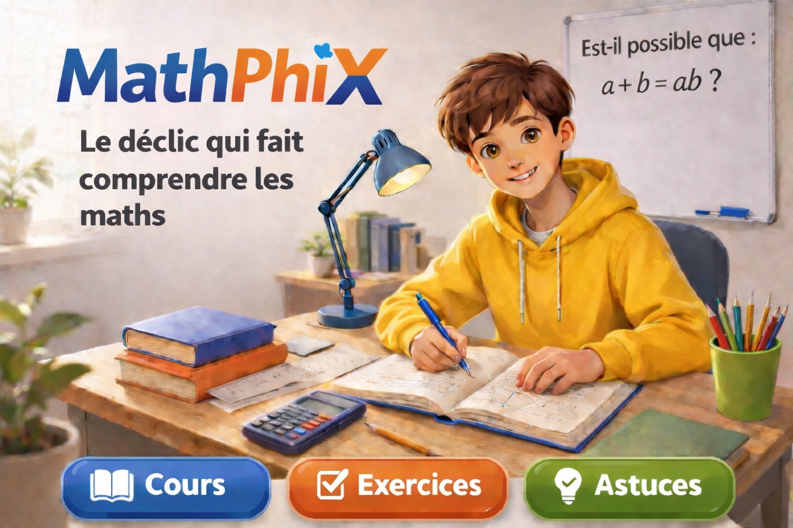

Méthodes
Comment mieux travailler et progresser au lycée ?
Organisation, régularité, prise de notes et préparation des contrôles : les habitudes qui font vraiment la différence.
MathPhiX • Lycée & orientation
De la Seconde à la Terminale, retrouvez des méthodes de travail, des conseils pour choisir vos spécialités et des guides pratiques pour préparer Parcoursup et découvrir les études supérieures.

Votre parcours
Choisissez le sujet qui correspond à votre situation pour accéder rapidement aux ressources utiles.
Guides à découvrir
Des réponses claires et concrètes pour progresser aujourd’hui et préparer la suite.
Méthodes
Organisation, régularité, prise de notes et préparation des contrôles : les habitudes qui font vraiment la différence.
Spécialités
Une méthode pour relier ses résultats, ses goûts et son projet d’études sans choisir uniquement par défaut.
Mathématiques
Les critères à examiner, le rôle de l’option maths complémentaires et les conséquences possibles selon les formations.
Parcoursup
Calendrier, vœux, dossier, projet motivé et réponses : un parcours expliqué simplement pour mieux anticiper.
Formations
Comparez la durée, l’encadrement, le rythme, les poursuites d’études et les débouchés de chaque voie.
Métiers
Data, informatique, ingénierie, finance, enseignement : découvrez des secteurs et les études qui y conduisent.
Fil conducteur
Il n’est pas nécessaire d’avoir un métier précis en tête dès la Seconde. L’objectif est d’avancer étape par étape, de mieux se connaître et de garder des choix cohérents avec son projet.
MathPhiX
MathPhiX accompagne les lycéens et leurs familles avec des explications accessibles, des comparaisons concrètes et des conseils qui relient réussite scolaire et projet d’avenir.